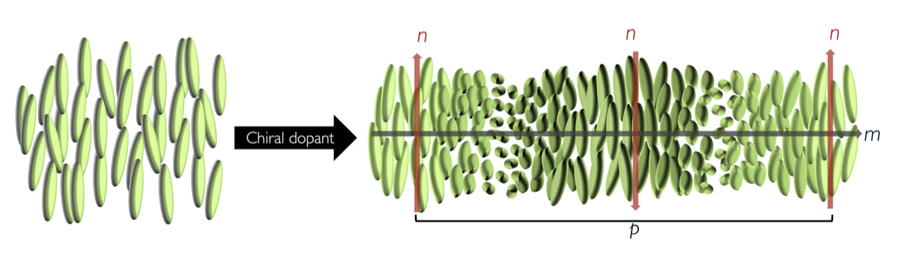

What are liquid crystals ?
Matter can be categorized into three states according to the arrangement of its molecules: solid, liquid and gaseous. This arrangement depends on the conditions to which matter is subjected, such as temperature and pressure. As their name is antithetical, liquid crystals represent a unique state of matter halfway between crystalline solids and isotropic liquids. This is called the mesophase state.
How are they organized at the molecular level?
Within this mesophase state, liquid crystals are distinguished into two categories: nematics and smectics. The molecules inside a nematic liquid crystal are free to move like a liquid and orient themselves on average towards the same axis n. This orientation is a long-distance order. For smectic liquid crystals, the molecules are organized in layers where they are all oriented in the same direction, either straight or diagonally. This molecular organization makes nematic liquid crystals more fluid than smectics.
Nematic liquid crystals
Smectic liquid crystals
Cholesteric liquid crystals
In our study, we will focus on a particular kind of nematic liquid crystals. Cholesteric liquid crystals (CLC) are chiral nematic liquid crystals. The word "chiral" here designates the helical molecular structure of the nematic liquid crystal.
Scheme of chirality in a CLC
How does a CLC's color change ?
In a cholesteric liquid crystal, the color we see is the result of a selective reflection of light by the layers of its helical structure. The distance between two layers is the helical pitch : the distance it takes for a molecule to rotate fully on itself. When two waves reflected by two layers of the crystal are overlapping, they must form a constructive interference in order to make the reflected color visible.

Scheme of selective reflexion in a CLC explained by Bragg's law
And in order to create a constructive interference, the path difference between the two waves must be a multiple of wavelenght. Otherwise, they would be destructive and we would not be able to see any color. We can express the path difference by Bragg’s law, it takes into account the helical pitch, the refraction index of the crystal and the angle of incidence of the wave :
$$k\lambda = 2n d \sin \theta$$
How can we apply it to save concrete buildings ?
So, in order to change the color of a CLC we need to change its helical pitch. The helical pitch can vary because of the temperature and of course because of a mechanical deformation. Applying a CLC to a concrete infrastructure is an interesting way to detect cracks easily.